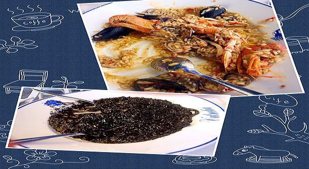
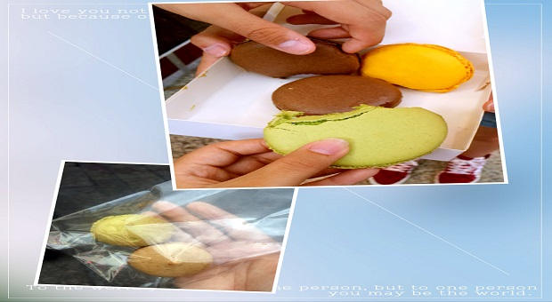
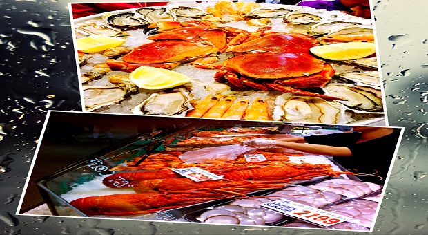
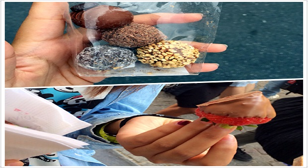
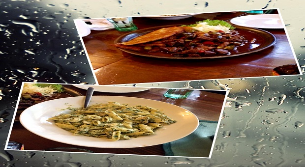
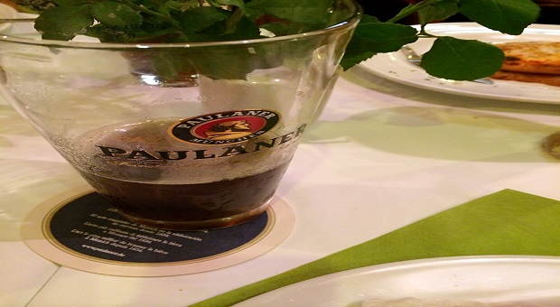
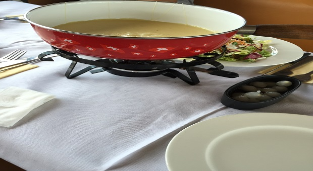

西班牙
除了足球，还有一样东西也让他们深为自豪，那就是西班牙的国饭——海鲜饭，无论是在国宴还是平民家的饭桌，都能见到它的踪影。众多的海鲜食材在海鲜饭中，呈现出及其丰富的口感，却又互不混合，鲜嫩可口。在海鲜饭的系列中还有一种墨鱼汁海鲜饭。西班牙当地人管它叫海鲜黑饭。米饭发黑的原因就是因为使用了黑色的墨鱼汁。吃了这种饭，让将你牙齿嘴巴到处都变得黑乎乎
法国
马卡龙-它还有一个更加动听的名字叫做少女的酥胸，它是一种用蛋白、杏仁粉、白砂糖和糖霜所做的法国甜点，通常在两块饼干之间夹有果酱或奶油内馅。但今日仅有极少的城市能够找到品质顶尖的马卡龙，所以在法国一定不能错失这道人间美味，位于巴黎的 Ladurée，巴黎著名的春天百货公司里面的 Hugo&Victor 都是顶级的选择
澳大利亚
来到这里，你一定要品尝一下正宗澳大利亚的海鲜各个新鲜肥美、价格平实，无需复杂的烹饪技巧，简单料理即能令你享受一顿丰盛的海鲜。为大家推荐的是悉尼鱼市场，它是澳大利亚最大的海鲜市场。远眺悉尼海港的无敌海景，在户外的遮阳伞下吹着海风大快朵颐，视觉与味觉的双重享受，更加令人陶醉！并且这里有许多华人经营的海鲜排挡，烹调的海鲜更加符合中国人的口味。
瑞士& 比利时
照片的上方是瑞士巧克力，下方是比利时巧克力。根据个人感觉瑞士的巧克力更忠于醇香的可可口感，而比利时巧克力在花样上进行了更繁多的变化，口感上更加柔和。为大家推荐瑞士的Teuscher和比利时的Godiva，值得一试。
捷克
为大家推荐位于布拉格的好兵帅克餐厅，在布拉格的那段时间，他让我欲罢不能。餐厅门面不大，通往大厅的走廊灯光昏黄。菜品有烤乳猪，烤肘子，烤鸭等，分量足，菜价不高。配菜多半是欧洲各国都爱吃的红菜。主食是一片片精粉馒头片，里面加了蛋奶，口感细腻，有不同口味。大厅服务员身穿奥匈帝国的服装，穿着旧时服装的乐手，吹拉弹唱着捷克传统民谣。
德国
大家都知道德国的啤酒闻名世界，在慕尼黑啤酒更是随处可见，希望大家品尝的是黑啤，在德国人们称它是饮料佳品，享有"黑牛奶"的美誉。每年九月末到十月初在德国的慕尼黑举行，持续两周，到十月的第一个星期天为止，是慕尼黑一年中最盛大的活动。但是我因为去的时间问题，啤酒节也成为我的德国之行的小小遗憾
瑞士
瑞士的奶酪和它的巧克力一样鼎鼎有名。寒冷的冬天，瑞士人的一大乐趣就是全家围坐在一起，吃妈妈制作的奶酪火锅。奶酪火锅和中国火锅很相似，只不过锅底是溶化了的奶酪，“涮”的菜点是面包、水果、蔬菜。 瑞士奶酪火锅使用这些餐具眼睛也像吃了美味的奶酪一般舒服。爱奶酪的同学们去了瑞士一定不要错过哟。
Previous
Next






